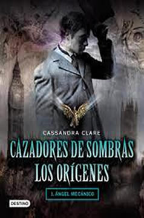

Cazadores de Sombras Los Origenes
Sinopsis
Tessa Gray está dispuesta a encontrar a su hermano, del que no recibe noticias desde hace tiempo. Para ello, se dirige a Londres, donde será raptada por las Hermanas Oscuras, miembros de una organización secreta llamada el Club Pandemonium, y rescatada por los Cazadores De Sombras
Reseña
Bueno con el comienzo de esta nueva saga ambientada en el Londres Victoriano, Cassandra Clare se vuelve a confirmar como una de las escritoras más hábiles en el género de la fantasía urbana y una de mis favoritas. Haciendo gala de un estilo cuidado, ágil, con expresiones y referencias acordes al siglo XIX pero con un ritmo propio del siglo XXI, la autora nos presenta a estos primeros cazadores de sombras que poco tienen que envidiar a los de nuestro tiempo que conocimos en la anterior saga.
En cuanto a los personajes el trio protagonico compuesto por la misteriosa Tessa, el indómito Will y el taciturno Jem, si bien guarda ciertas similitudes con los de la saga anterior, cuentan con personalidades más complejas y secretos mucho más oscuros que los de Clary, Jace y Simon. Además, el hecho de que Tessa no sepa en realidad quién es, ofrece un contrapunto muy interesante que la autora sabe explotar bien.
El final me dejo... con muchas ganas de leer los proximos que en cuanto pueda lo hare
En resumen es una historia repleta de acción, personajes bien construidos, una buena dosis de romance y el toque londinense que sólo la época victoriana puede ofrecer este es tu libro
5/5